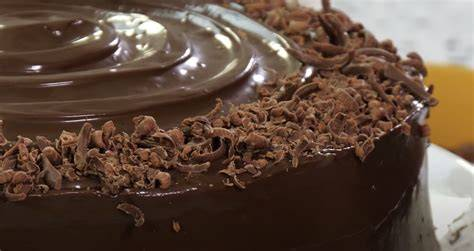

100% Artesanales
Recetas tradicionales hechas con ingredientes de alta calidad.


Recetas tradicionales hechas con ingredientes de alta calidad.
Llevamos tus pedidos a la puerta de tu casa con todo el cuidado.
¿Tienes dudas? Escríbenos por acá
Contacto >Somos una pequeña repostería dedicada a ofrecer productos preparados de manera artesanal, para la comunidad de San Martín de Porres.
Como dueños de nuestra repostería nos esforzamos por ofrecer el mejor servicio y productos de calidad.